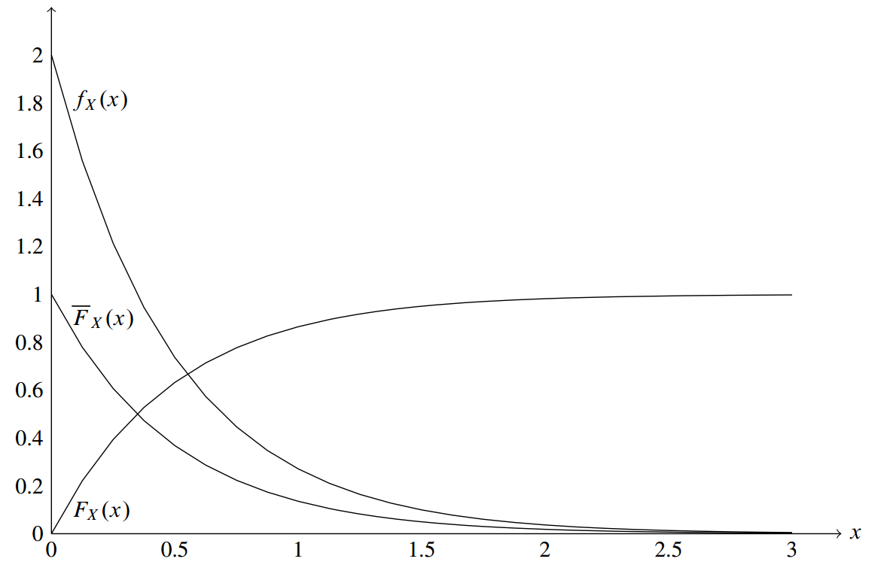

概率分布
指数分布

无记忆性1(Hazard Function)
表示在接下来时间内对象消失的概率，所以表示对象 在接下来单位时间内消失的概率，由上式可知为常数
无记忆性2
无记忆性3
最小指数分布
假设和是独立的指数分布，令， 且定义变量，如果，如果，则
Erlang分布
为独立指数分布，则称为Erlang分布：
超指数分布
如果对于一个随机变量，服从参数为的指数分布的概率为，则 称为超指数分布：
泊松分布
假设有一堆对象符合指数分布，则在时间内到达的对象个数为 以上为泊松分布
令以指定顺序到达，则 若不指定到达顺序，则
泊松过程Thinning 泊松过程superpositioning